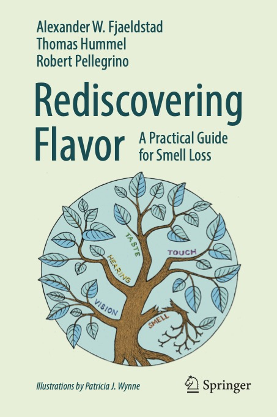

Books, peer-reviewed articles, and recent pre-prints from the Pellegrino Sensory Research Laboratory.

An evidence-based cookbook and guide developed for individuals living with anosmia and smell loss. Drawing on chemosensory research, this outreach project extends laboratory science to real-world contexts, offering practical strategies for navigating flavor and food enjoyment.
View on Amazon →Pellegrino, R., Mayhew, E., & Mainland, J.D. (2026). Reply to Doty 2025, Predicting Odor from Structure is Useful. Chemical Senses, bjag003.
Andres, M.†, Pellegrino, R.†, Song, X., Ocampos, F., & Mainland, J.D. (2026). Odor Sampling Bags Enable Reliable Delivery of Controlled Odor Concentrations. bioRxiv, 2026-09. bioRxiv →
Satarifard, V., Sisson, L., Han, Y., Illideio, P., Hjadis, M., …, Pellegrino, R., …, & Meyer, P. (2025). High-Fidelity Tuning of Olfactory Mixture Distances in the Perceptual Space of Smell Through a Community Effort. bioRxiv, 2025-12. bioRxiv →
Barra, B., Pellegrino, R., Zhao, J., Danilo, C., Streleckis, A., Reizis, T., Rinberg, D., & Mainland, J. D. (2025). Mice and humans evaluate odor stimulus strength using common psychophysical principles. bioRxiv, 2025-08. doi.org →
Pellegrino, R., Samoilova, K., Ihara, Y., Andres, M., Singh, V., Gerkin, R. C., …, & Mainland, J. D. (2025). A quantitative framework for predicting odor intensity across molecules and mixtures. bioRxiv, 2025-08. bioRxiv →
Wang, Q.J. & Pellegrino, R. (2025). Automating Chemosensory Creativity Assessment with Large Language Models. Food Quality and Preference, 105599.
Croijmans, I., Pellegrino, R., & Wang, Q. J. (2024). Demystifying wine expertise through the lens of imagination: Descriptions and imagery vividness across sensory modalities. Food Research International, 182, 114159.
Hamel, E. A., Castro, J. B., Gould, T. J., Pellegrino, R., Liang, Z., Coleman, L. A., …, & Gerkin, R. C. (2024). Pyrfume: A window to the world's olfactory data. Scientific Data, 11(1), 1220.
Pellegrino, R., McNelly, C., & Luckett, C. R. (2021). Subjective touch sensitivity leads to behavioral shifts in oral food texture sensitivity and awareness. Scientific Reports, 11(1), 20237.
Pellegrino, R., Horberg, T., Olofsson, J., & Luckett, C. (2021). Duality of Smell: Route-Dependent Effects on Olfactory Perception and Language. Chemical Senses, 46.
Pellegrino, R., & Luckett, C. R. (2020). Aversive textures and their role in food rejection. Journal of Texture Studies, 51(5), 733–741.
Pellegrino, R., Hummel, T., Emrich, R., Chandra, R., Turner, J. H., Trone, T., Dorminy, C., & Luckett, C. (2020). Cultural Determinants of Food Attitudes in Anosmic Patients. Appetite, 147, 104563.
Pellegrino, R., Wheeler, J., Sams, C. E., & Luckett, C. R. (2019). Storage Time and Temperature on the Sensory Properties of Broccoli. Foods, 8(5), 162.